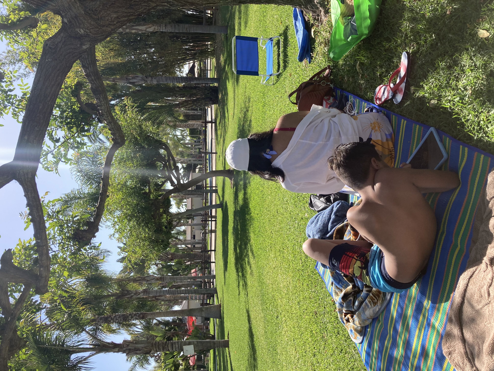
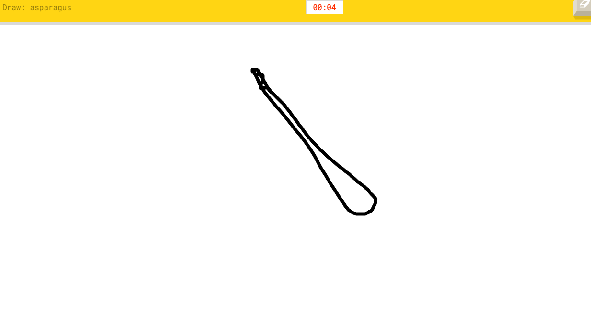
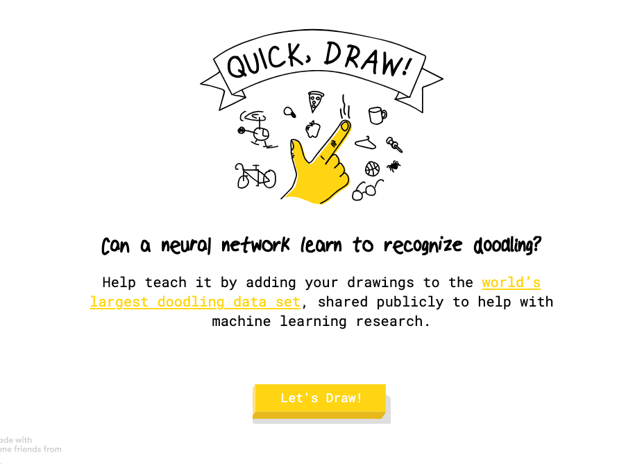
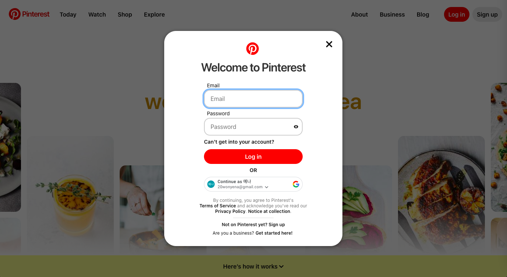
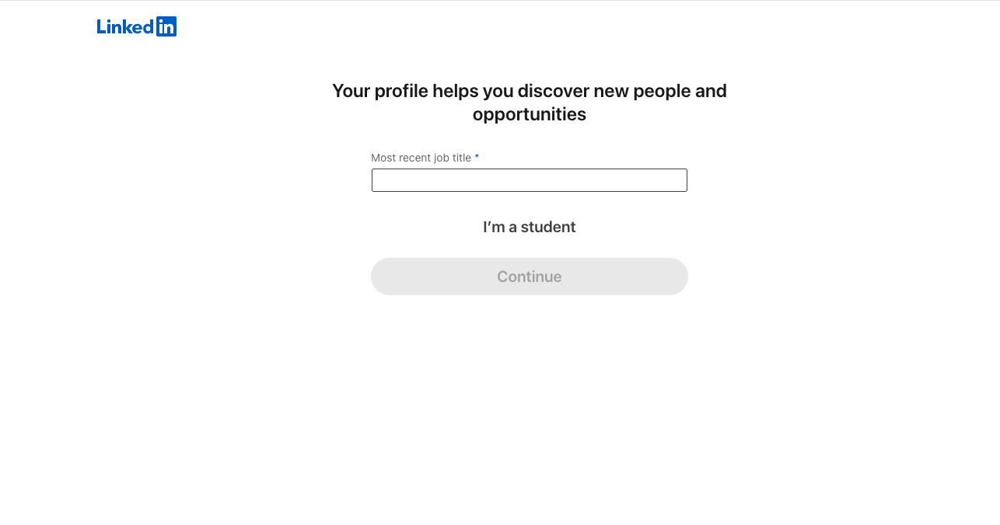

Journal 5 - Game Design UX Best Practices
Game Design UX Best PracticesThe article Game Design UX Best Practices by Amir Dori focuses on how to create a smooth and enjoyable experience for players. It talks about designing helpful pop-ups, using ads in a way that doesn’t annoy players, making drag-and-drop actions easy, and giving clear feedback. The goal is to make players feel guided and satisfied while also keeping them engaged in the game. It stresses finding the right balance between user enjoyment and game objectives. Reading the article, I learned that creating intuitive user interfaces, smooth navigation, and engaging player interactions are essential elements in game design. These factors help players feel more connected to the game and allow for a more enjoyable experience. For my upcoming project, "Game On," I plan to apply these concepts by focusing on simplicity in design and ensuring that players can easily navigate the game. Additionally, I will work on making interactions feel responsive and rewarding to keep players engaged and immersed in the gameplay.
Journal 4 - Visual Thinking Analysis
10 Intriguing Photographs to Teach Close Reading and Visual Thinking SkillsPart One This image was taken at the first house where I lived in America with my sisters, marking the beginning of my journey in the United States. It brings back memories of those early days and the events that have shaped my life since then. One of the most intriguing aspects of the image is its aged, grainy quality, which immediately shows that it was captured years ago. The most obvious detail is that this photo has been around for quite some time, but the mystery lies in when it was taken—the exact year, our ages at the time, and the specific moment it captures all add a layer of nostalgia and curiosity for viewers. 
Part Two This image appears to capture someone’s point of view, possibly taken by a student or a friend or family member of the people in the photo. The people seem to be family members or friends, enjoying a picnic near a beach or swimming pool. The warmth of the sunlight and the weather is almost tangible. The most interesting aspect of this image is the mystery of who took the photo and whose perspective we're seeing. Viewers don’t know the identities of the people in the photo unless the photographer reveals them. What’s most obvious, though, is what they’re doing—the picnic scene is clear. The most mysterious element remains the exact location and the identity of the photographer.
Journal 3 - 10 Intriguing Photographs to Teach Close Reading and Visual Thinking Skills
10 Intriguing Photographs to Teach Close Reading and Visual Thinking SkillsThe article "10 Intriguing Photographs to Teach Close Reading and Visual Thinking Skills" by Michael Gonchar talks about how using interesting photos helps students become better at observing details and thinking critically about what they see. By asking open-ended questions, students are encouraged to look more closely at the images and think about what's really happening. I think this approach helps build patience, curiosity, and the ability to back up their ideas with evidence. It also leads to meaningful discussions and improves important academic skills like reasoning. Overall, the article shows how visual activities can make learning more engaging and accessible, helping students express their thoughts more clearly. I found Quick, Draw!, a website that challenges users to quickly sketch objects. This game encourages creative problem-solving and fast, critical thinking. Similar to the photographs mentioned in the article, which ask students to observe and interpret details, Quick, Draw! pushes players to think about how to represent everyday items in simple, recognizable ways. The game is interactive and gives immediate feedback, which helps users improve their visual communication skills. This is much like how the article encourages students to analyze and clearly express their thoughts about images.
  Quick DrawJournal 2 - Overlays Design Pattern Research
Overuse of Overlays: How to Avoid Misusing Lightboxes Best Practices for Modals / Overlays / Dialog WindowsIn Best Practices for Modals / Overlays / Dialog Windows, the article highlights the importance of using overlays thoughtfully in user interface design. Overlays, such as modals or dialog windows, are effective for drawing attention to critical actions—like login prompts or forms—but should be implemented with care. Best practices include providing clear exit options, ensuring appropriate sizing, and maintaining accessibility through features like keyboard navigation and ARIA tags. The article stresses that overlays should be used only when necessary to enhance the user experience, not disrupt it. The article Overuse of Overlays: How to Avoid Misusing Lightboxes discusses how overlays, particularly lightboxes, have become overused and disruptive in modern web design. This overuse often causes users to instinctively dismiss them, breaking their focus and leading to frustration. The key message is that overlays should only be used when they add significant value to the user experience, such as requiring user input or emphasizing crucial information. The article also suggests considering less intrusive alternatives, like toast notifications, to avoid interrupting user flow unnecessarily. I found out that Pinterest uses overlays effectively during login and for ads to pop up on the screen. When users explore Pinterest without logging in, a modal appears, prompting them to sign up or log in while still allowing them to see the content in the background. This approach keeps users engaged without taking them away from the page. Additionally, Pinterest integrates overlays for advertisements, often showing relevant sponsored content that fits seamlessly into the user experience. 
PinterestJournal 1 - Best Practices for Form Design
Best practices for form designIn the article, forms are highlighted as critical elements in converting users on websites or mobile applications. The article emphasizes that creating a user-friendly, efficient form is a key responsibility of a product designer, as forms are essential to achieving conversions. Forms are portrayed as tools that, when designed correctly, reduce user frustration and improve completion rates, ultimately supporting business objectives. The article emphasizes simplicity, accessibility, and clarity in form design to create an intuitive user experience that enhances conversions. I found out during joing LinkedIn and creating a profile can be somewhat challenging for users due to the multi-step process that takes place on separate pages. Unlike many other platforms that offer a more streamlined, on-page form for profile creation, LinkedIn requires users to navigate through different pages for each step. This can make the process feel less intuitive and more time-consuming. Additionally, users cannot edit their information immediately; they must visit their profile page or the job application form after completing the sign-up process. This separation can make it cumbersome to make quick updates or adjustments, as users may need to remember the information they initially provided and navigate back to the appropriate sections. 
LinkedIn